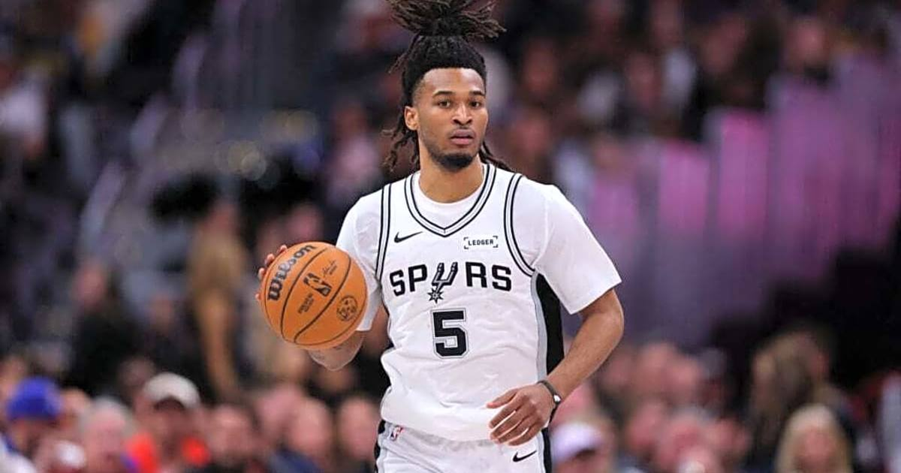

Spurs open with a franchise-record 18-0 run and rout the Warriors 123-85 for their 11th straight win
Stephon Castle scored a season-high 32 points — more than the Warriors' entire starting five — as San Antonio opened with an 18-0 run, the largest to start a game in franchise history in the play-by-play era, and rolled to its 11th straight win.

Disclosure: this post contains affiliate links. I earn a commission on qualifying purchases.
The night
The game was over before Golden State scored. San Antonio opened with 18 unanswered points — the largest run to open a game in Spurs history in the play-by-play era — and never let the Warriors back in, rolling to a 123-85 win at Frost Bank Center on Friday night in NBA Cup play.
Golden State missed its first 11 shots and went 6:07 without a point. By the end of the first quarter it was 38-14, and by halftime the gap was 30. The Warriors' starters combined for 30 points all night. Stephon Castle had 32 by himself.
Castle's night was the story inside the rout: a season-high 32 points on 12-for-18 shooting, including 5-for-8 from three, with six assists and five rebounds in just over 25 minutes. He scored eight of the opening burst's points and 13 in the first quarter, and the Spurs outscored Golden State by 35 while he was on the floor. Victor Wembanyama, quiet by his standards, still finished with 12 points and 12 rebounds in 21 minutes. De'Aaron Fox and Devin Vassell both started despite landing on the injury report.
The history
The 18-0 opening is the biggest run to start a game in Spurs history since the league's play-by-play era began in 1997-98, according to the NBA — and, per Elias, the worst start to a game the Warriors have had in that same span. Golden State's previous low came against Seattle in January 2005.
The win is San Antonio's 11th straight, the NBA's longest active run, after an 0-2 start to the season. At 11-2 the Spurs are tied with the Lakers for the best record in the West, and they sit 2-0 atop NBA Cup West Group C. Wembanyama has been the engine of the whole stretch — across the previous 10 wins he totaled 326 points, 114 rebounds, 45 blocks and 21 threes.
For Golden State, this was the first game of life without Stephen Curry, who tore his right oblique in Wednesday's loss at Houston and will be re-evaluated in two weeks. The Warriors have now lost consecutive games for the first time since dropping their first three of the season, and only two players reached double figures.
What's next
Eleven straight, and the Spurs are doing it with defense, depth and a 21-year-old guard who just outscored an entire starting five. The streak started with a comeback in Chicago; now it's a demolition of the league's most decorated team of the last decade. San Antonio looks less like a hot team and more like a real one.
Gear up: Fanatics